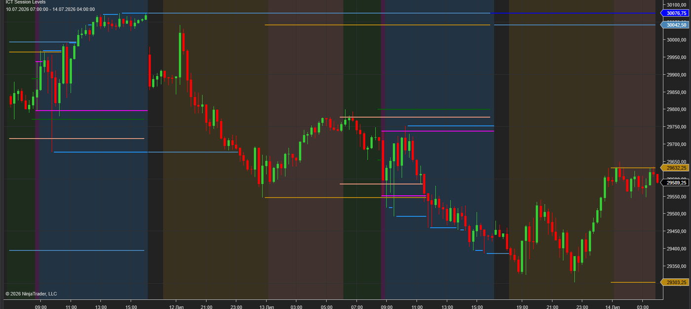

Plots every key session level ICT traders use — Asian range, London range, Pre-Trade, RTH, Opening Range, Previous Day and Previous Week highs and lows — automatically, on any chart. No manual drawing, no missed levels.
$29
1-day trial · Full version · No signup required

The overnight accumulation range that frames liquidity for the London open — high, low and zone shading, with configurable times.
The London Killzone range where the day's initial expansion usually happens. Track its high/low as intraday reference levels.
Pre-market and regular trading hours plotted as separate configurable zones, so the New York open context is always on the chart.
Configurable Opening Range (e.g. first 15/30/60 minutes) — a standard reference for breakout and reversion setups.
PDH and PDL — the most commonly targeted liquidity pools in ICT-style models — drawn and extended automatically.
PWH and PWL for higher-timeframe draw on liquidity, toggleable independently from daily levels.
ICT-style trading lives on session structure: the Asian range sets the stage, London runs the stops, and New York delivers to previous day and week highs and lows. Drawing these levels by hand every day is slow and error-prone — one wrong session boundary and the whole read is off.
This indicator plots every level from exchange data with your exact session definitions. Each session is fully configurable — times, colors, zone shading, which levels to show — so the same install works for futures indices, FX futures, or anything else you trade on NinjaTrader 8.
Typical uses: Judas swing setups off the Asian range, London Killzone breakouts, Opening Range reversals, and targeting PDH/PDL liquidity in the New York session.
Download the .zip file (trial or full version from Gumroad).
In NinjaTrader 8: Tools → Import → NinjaScript Add-On, select the .zip.
Restart NinjaTrader and add ICT Session Levels to any chart. Configure session times in the indicator settings.
Full version: send your Machine ID after purchase — activation is confirmed the same day, then restart NT8.
Yes — every session has configurable start/end times, so you can match your instrument, timezone and trading model exactly.
Yes. It works on any NinjaTrader 8 chart — index futures, FX futures, stocks — with sessions defined in your chosen timezone.
Yes. Every session and level (including Prev Day/Week H/L and Opening Range) toggles on/off independently.
The trial is the full version, limited to 1 day. No signup, no email required.
All key sessions and levels, fully configurable · Lifetime license · Support included
Official NinjaTrader Ecosystem Vendor. NinjaTrader® disclaimer and vendor requirements will be added here.